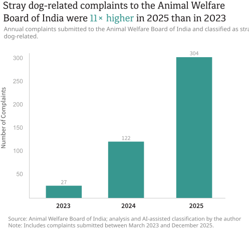
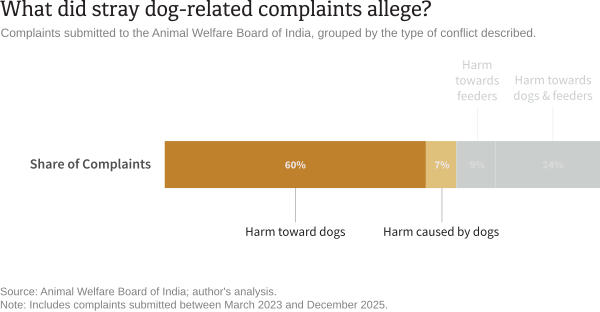
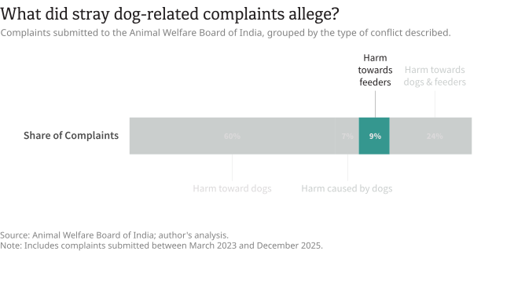
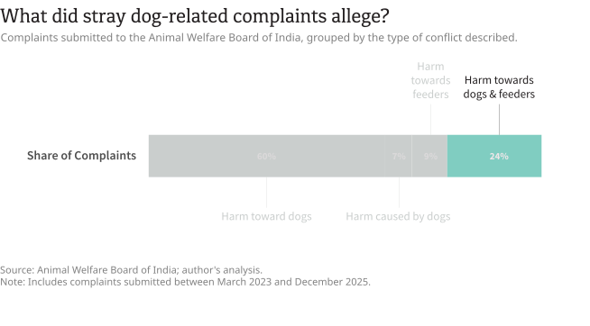
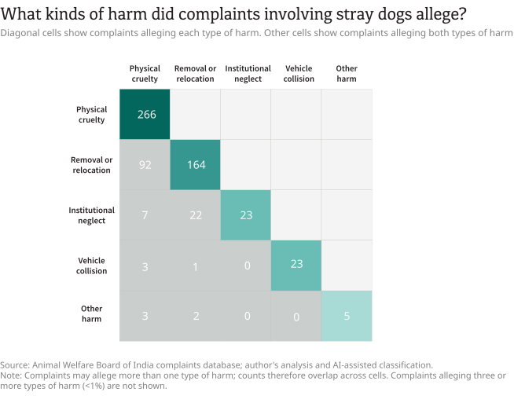
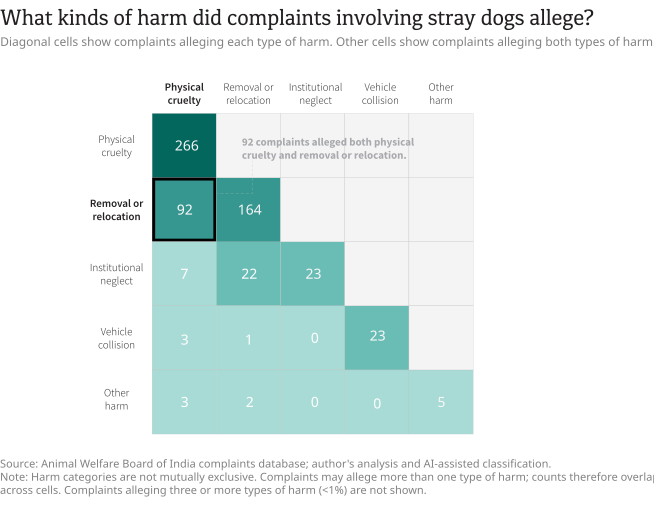
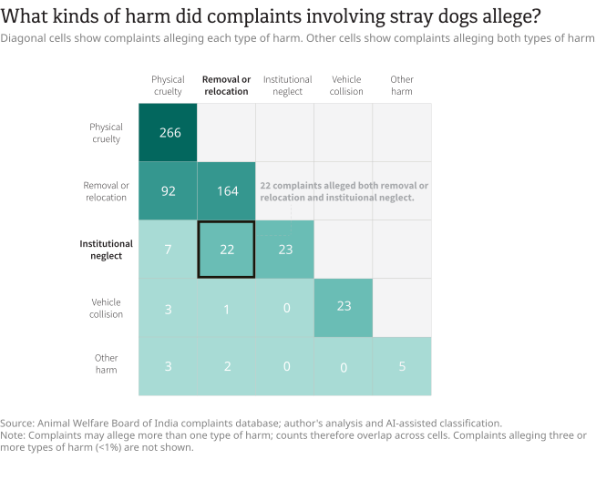
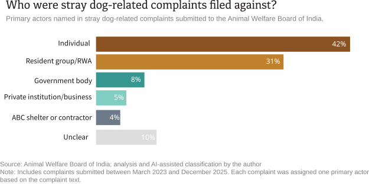

India's stray-dog conflict generates many kinds of official data, including records of dog bites, estimates of stray-dog population and the number of sterilizations conducted. Another administrative record comes from the Animal Welfare Board of India (AWBI). A statutory body established under the Prevention of Cruelty to Animals Act 1960, the AWBI is the country's principal advisory body on animal welfare. It advises governments on animal welfare laws and policies, works with animal welfare organisations, and plays a key role in implementing India's animal welfare framework.
Among its other functions, it also receives public complaints related to animal welfare from across the country. These complaints offer another lens into India's stray-dog conflict, documenting the incidents that people choose to report to the country's national animal-welfare body.
About the Data
- Between March 2023 and May 2026, people across India submitted more than 1,100 complaints to the AWBI. The dataset includes complaints from 31 of India's 36 states and Union Territories, although reporting varies widely across states.
- 70% (776) of all complaints received during this period were identified as involving dogs. The remaining complaints were related to cats, cows, sheep, birds, and other animals.
- Of the dog-related complaints, 63% (487) involved stray dogs and 30% (233) involved pet dogs. The remaining complaints could not be confidently classified as either stray- or pet-dog related. The analysis below focuses on 453 complaints submitted between 2023 and 2025, as the 2026 data is incomplete.
Between March 2023 and December 2025, the AWBI received nearly 450 stray-dog-related complaints. The number of these complaints increased significantly over the period covered by the dataset. This trend was not simply a reflection of more complaints being submitted to the Board overall: stray-dog-related complaints also accounted for a growing share of all AWBI complaints, rising from 35.5% in 2023 to 45.9% in 2024 and remaining at a similar level in 2025.

What the Complaints Alleged
Most stray-dog-related complaints submitted to the AWBI did not allege harm caused by dogs. Instead, they alleged harm or threat of harm toward stray dogs, the people who cared for them, or both.
Nearly six in ten complaints alleged harms towards stray dogs. Fewer than one in ten alleged harm, threat or nuisance by stray dogs.
Complaints alleging harm toward dogs ranged from physical cruelty to illegal relocation and poor shelter conditions. Complaints alleging harm caused by dogs included dog bites, aggressive behaviour and requests to remove dogs on public safety grounds.

Nearly one in ten complaints alleged harm towards stray dog caregivers and feeders.
These complaints alleged verbal abuse, intimidation, physical assaults and attempts to prevent them from feeding or caring for stray dogs.

Nearly two in ten complaints alleged harm toward both stray dogs and their caregivers.
These complaints alleged that dogs were harmed while their caregivers were threatened, harassed or prevented from feeding them.

The Forms of Alleged Harm
The complaints on harm towards stray dogs did not all describe the same kinds of incidents. While some alleged physical cruelty, others focused on relocation, conditions in shelters or sterilization centres, or vehicle collisions. We classified these allegations to understand which forms of harm appeared most often.
Physical cruelty was the most commonly alleged form of harm to stray dogs. A total of 266 out of 403 complaints alleging harm towards stray dogs included allegations of physical cruelty, such as poisoning, beating, kicking, stabbing, burning or killing, as well as threats to carry out such acts.
Complaint filed in West Bengal on July 27, 2025: One complaint alleged that a family was "beating and throwing stones" at stray dogs and puppies. When the complainant objected, they alleged the family threatened them in return.
The second most common allegation involved the illegal removal or relocation of stray dogs. These complaints alleged that dogs were taken from their home territories and placed elsewhere. Other forms of alleged harm, including poor conditions in shelters or sterilization centres and vehicle collisions, were comparatively uncommon.
Complaint filed in Chennai, Tamil Nadu, on October 11, 2025: One complaint alleged that several community dogs were "caught and removed" by management or workers at an employee residential township and "have not been returned and are missing for many weeks."

Many complaints alleged more than one form of harm. The most common combination was physical cruelty alongside the removal or relocation of stray dogs.
Complaint filed in Karnataka on July 31, 2024: A complainant alleged that school staff "keeps hitting a community stray female dog with sticks" and confined her without food or water during school hours. The complaint also alleged that school children "teased and harassed the dog", warned that "she is a friendly dog but... will turn aggressive," and claimed staff threatened to relocate her.

The second most common combination involved allegations of institutional neglect alongside removal or relocation. These complaints typically described dogs being removed from their surroundings and then allegedly mistreated while in shelters, veterinary facilities or sterilization centres.
Complaint filed in Tamil Nadu on April 1, 2024: A complaint alleged that dogs caught for sterilization were "released back randomly, not on their original location," while records were "maintained with improper and manipulated information." It also alleged inadequate post-operative care and that "many dogs die in the process of sterilization and post care."

The Alleged Actors
Most complaints alleging harm toward stray dogs named either private individuals or organized resident groups as the primary actor. Government agencies and institutions were named less frequently.

Private individuals were the primary actor named in 42% of complaints alleging harm toward stray dogs. Resident groups, housing societies and other neighbourhood collectives were named in 31% of complaints. Government agencies, including municipal corporations, panchayats, police departments and government veterinary authorities, were named in 8% of complaints, while private institutions accounted for fewer than one in ten.
The type of allegation also varied depending on who was named in the complaint. Resident groups and housing societies were most frequently named in complaints alleging the removal or relocation of stray dogs. By contrast, private individuals were most frequently named in complaints alleging physical cruelty.
What This Record Can Tell Us
Taken together, these complaints describe a range of disputes involving stray dogs, their caregivers, private individuals, resident groups and public authorities in India.
Administrative records are shaped by the institutions that collect them. Complaints submitted to the Animal Welfare Board of India record incidents that people believe warrant the attention of a national animal-welfare authority. Read together with dog bite statistics and other estimates of the stray-dog conflcit, these datasets offer a broader understanding of India's stray-dog issue, each capturing a different dimension of how it is experienced, reported and recorded.
A note on methodology
The complaints were scraped from the Animal Welfare Board of India’s complaints portal, then cleaned, de-duplicated and classified using an AI-assisted process. The classifications achieved an accuracy rate of more than 90 per cent across all categories. The full methodology and the scraped datasets are available in the project’s GitHub repository.